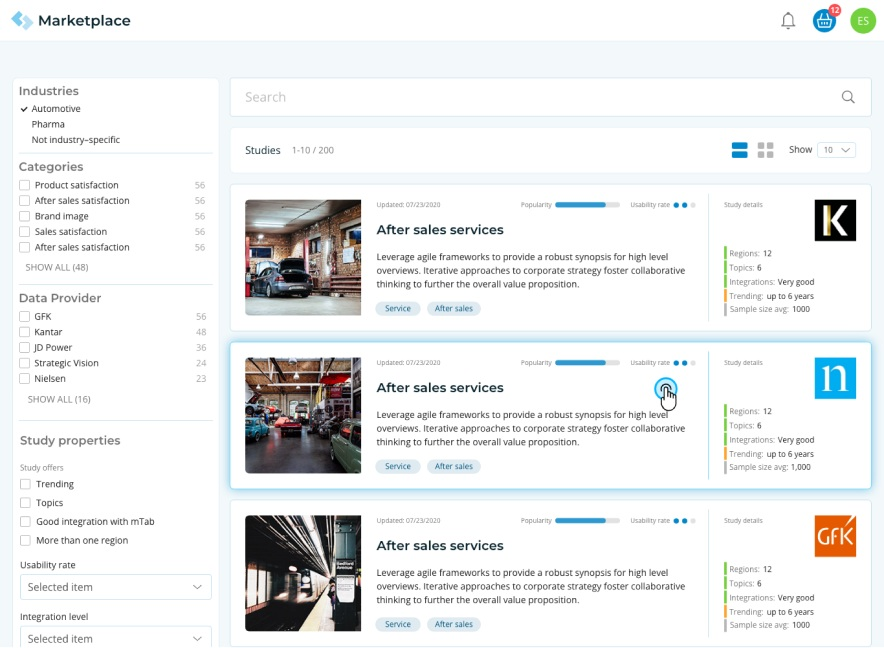
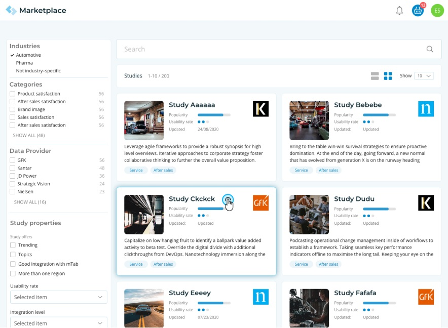
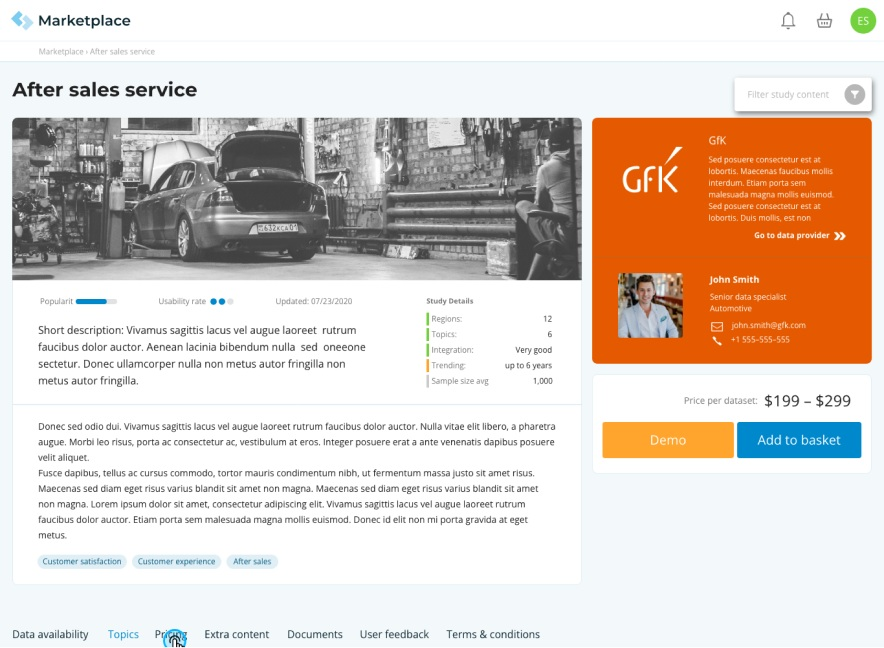
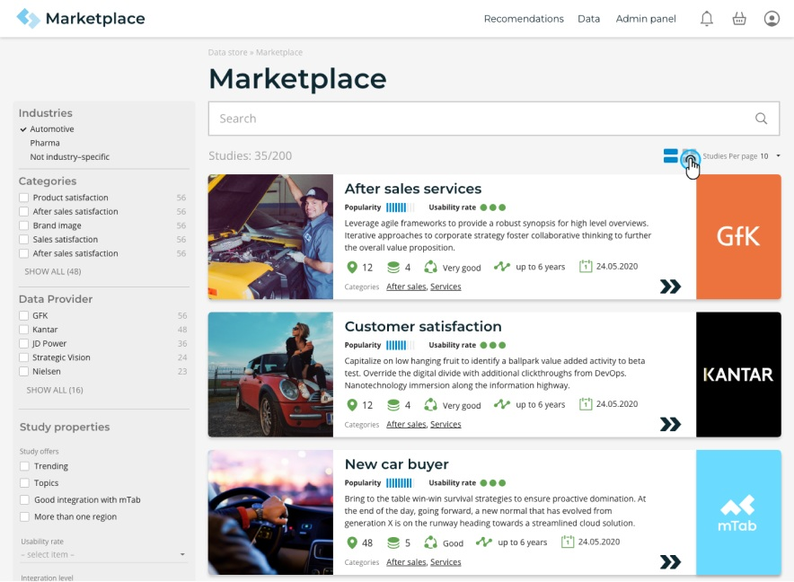
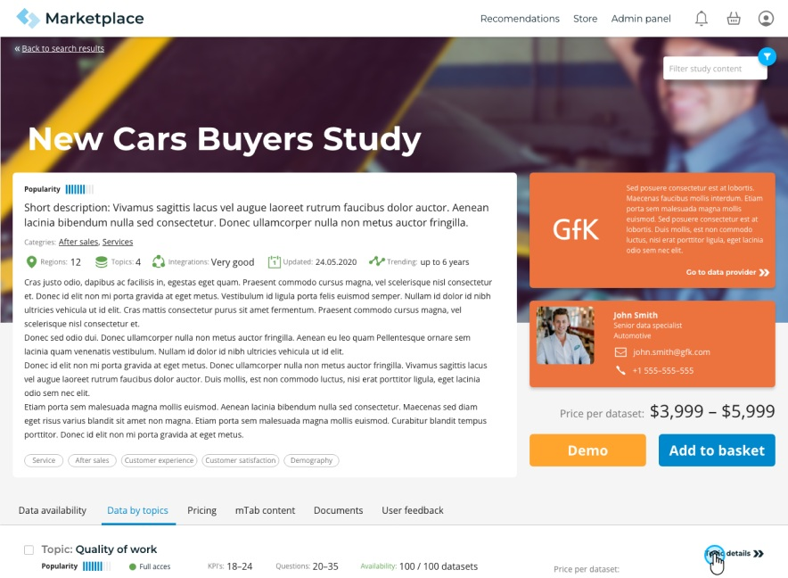
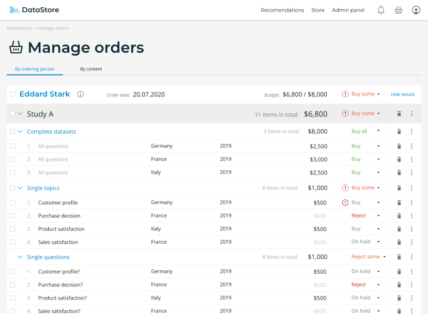

Marketplace
Bringing self-service commerce to enterprise research data

Overview
Halo Marketplace was mTab's two-sided e-commerce platform, connecting research data providers with enterprise buyers. You could find a dataset or report, buy it, and start analysing it without ever leaving Halo. As Head of Design I owned the UX concept and strategy, and designed all three sides of it: the buyer-facing storefront, the tools providers used to sell, and the admin panel behind both. It was a greenfield project, built from nothing.
Challenge
mTab needed a way to get research content to customers without dragging them through a long procurement cycle. The platform had powerful analytical tools but no way to find and buy new data. The marketplace had to serve two very different audiences at once: enterprise buyers who expected shopping to feel like shopping, and data providers who needed real tools for listings, pricing and fulfilment. It had to be as straightforward as any consumer site while quietly handling enterprise procurement, several payment methods and different fulfilment models.
My role
I oversaw the whole experience, across every side of the platform. For buyers I built a browsable, filterable catalogue with the usual cart-and-checkout flow, so finding, judging and buying research content took minutes rather than weeks. For providers, I designed listing management and order tracking tools that let them publish offers and monitor transactions. For administrators I built a panel for curating the catalogue, managing provider relationships and keeping an eye on transactions.
The principle throughout was to take friction out. Data you bought showed up in Halo straight away, reports opened directly in the Viewer, and everything surfaced in the Halo home feed.
Outcome
Marketplace shipped as a working e-commerce platform inside Halo. Buyers got self-service access to research data, and providers got a new channel to sell through with the analytics already built in.
What's next
Marketplace was later dropped when we moved to the Halo platform. The way it operated didn't fit Halo's decision insight model going forward.




